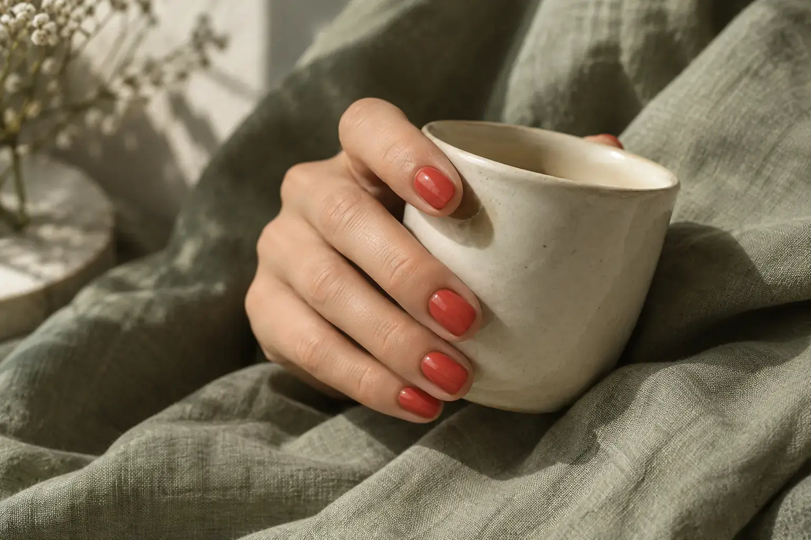
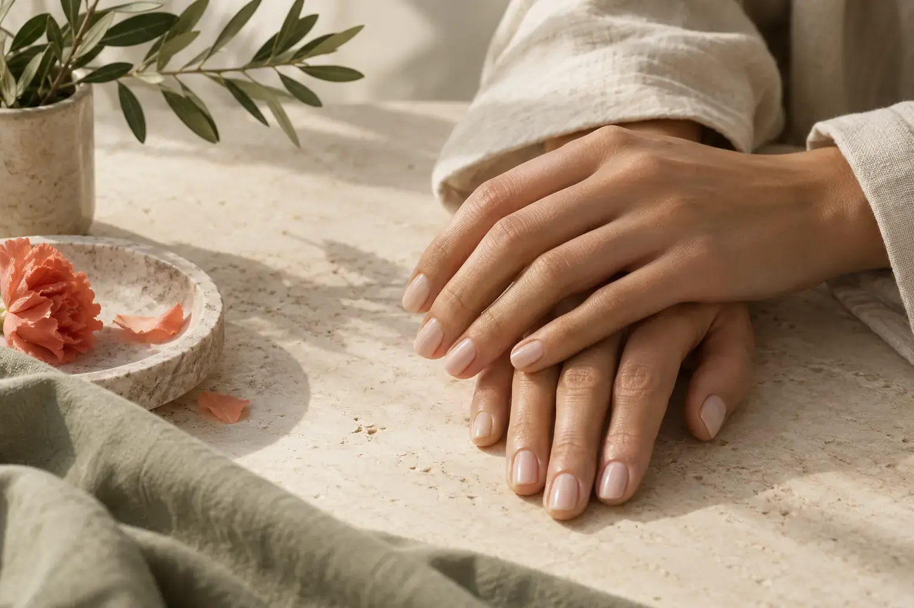
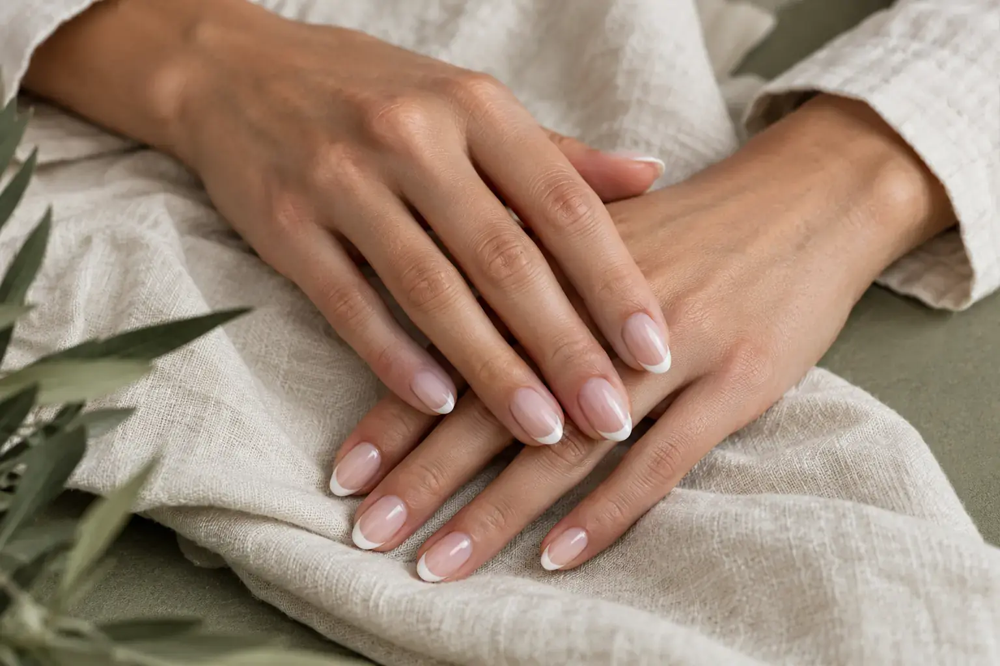

Kaip pasirinkti nagų spalvą
Autorius: Madbeauty redakcija · Numatyta 2026 m. spalio 5 d. 22:34 (Lietuvos laiku)
Trys kryptys ir klausimai, padedantys pasirinkti spalvą pagal savo kasdienybę, o ne vien ekrano nuotrauką.

Nagų spalvą paprasčiau pasirinkti turint dvi ar tris kryptis. Viena gali tikti kasdienai, kita – norimam akcentui. Prieš vizitą pasižymėk, ko tikiesi: mažai pastebimo padengimo, aiškaus kontrasto ar konkrečios detalės. Šios iliustracijos skirtos palyginti stiliaus kryptis, ne parodyti konkretaus meistro darbus.
Pradėk nuo savo savaitės
Pagalvok apie drabužius, kuriuos iš tikro dėvėsi, ir situacijas, kuriose nori matyti šią spalvą. Jei tau patinka ryškus akcentas, nereikia jo atsisakyti vien todėl, kad nuotraukoje neutrali spalva atrodo tvarkingai. Jei labiau vertini ramų bendrą vaizdą, pirmiausia palygink kelis artimus atspalvius.
- Kasdienis derinys: ar spalva patinka prie dažniausiai dėvimų drabužių?
- Norimas akcentas: ar nori, kad pirmiausia matytųsi spalva, forma ar viena dizaino detalė?
- Nagų ilgis ir forma: palygink panašaus ilgio pavyzdžius, kad lūkesčiai būtų aiškesni.
- Kitas vizitas: ar pasirinkimas vis dar patiks po kelių dienų, kai pasikeis apranga ar renginys?
Neutralus padengimas
Švelni rožinė, smėlio ar pieno kryptis leidžia daugiau dėmesio skirti nagų formai ir padengimo skaidrumui. „Neutralus“ nėra viena spalva: vienas variantas gali būti beveik skaidrus, kitas – visiškai dengiantis. Pasižiūrėk į mėginį ir pasakyk, kurio rezultato tikiesi.

Ryškus vienos spalvos akcentas
Koralo iliustracija rodo vientisos spalvos kryptį. Renkantis nebūtina tiksliai atkartoti šio tono. Palygink du mėginius toje pačioje šviesoje ir pasirink, kuris malonesnis tau. Ekranas, apšvietimas ir nuotraukos apdorojimas gali keisti spalvos įspūdį, todėl nuotrauka nėra konkretaus produkto atspalvio garantija.
Plona linija ar prancūziška kryptis
Jei patinka detalė, aptark linijos plotį, krašto formą ir bazinį toną. Pasakymas „prancūziškas“ dar neapibrėžia viso rezultato. Nuotraukoje matomą ilgį ar formą gali tekti pritaikyti tavo nagams; tai geriau išsiaiškinti renkantis procedūrą.

Ką nusiųsti meistrui
- Vieną pagrindinę nuotrauką ir vieną alternatyvą; prie kiekvienos parašyk, kuri dalis tau svarbi.
- Norimą ilgį ir formą, ar paliksi dabartinį padengimą, ar reikės nuėmimo.
- Ar nori vienos spalvos, vienos detalės, ar dizaino visam rinkiniui.
- Klausimą, ar pasirinkta paslauga ir laikas apima šį rezultatą bei reikalingus priedus.
Venk siųsti dešimt nesuderinamų pavyzdžių be paaiškinimo. Konkretus sakinys „patinka plona linija, bet noriu trumpesnių nagų“ padeda geriau už bendrą „padarykite panašiai“. Galutinę spalvą ir darbo apimtį susitarkite prieš procedūrą.
Kas įeina į manikiūro kainą padės atskirti bazinį padengimą nuo dizaino ar nuėmimo priedų. Manikiūro paslaugos yra kitas žingsnis pasirinkus kryptį. Šis gidas nepateikia sezono populiarumo reitingo ar konkretaus kainoraščio.